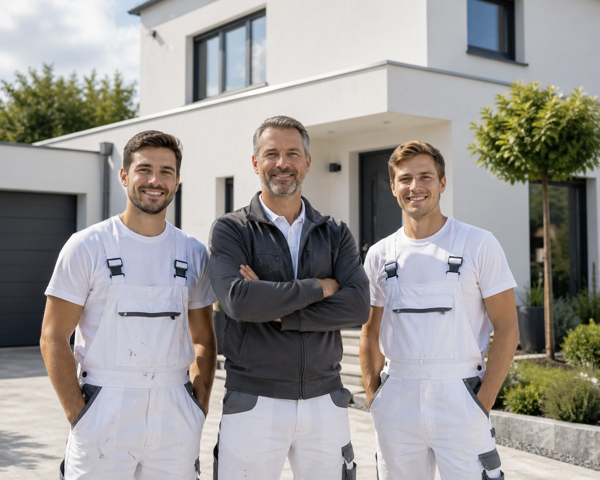

Regional
Für Kunden in Musterstadt und Umgebung unterwegs.
Wir verbinden handwerkliche Erfahrung mit moderner Beratung. Und mit dem Anspruch, dass Sie sich während des gesamten Projekts gut aufgehoben fühlen.

Farbe wirkt dann hochwertig, wenn Untergrund, Kanten, Material und Ablauf stimmen. Deshalb beginnt gute Arbeit für uns mit Zuhören und einer klaren Empfehlung.
„Eine saubere Kante ist ein Detail.
Ein gutes Ergebnis ist die Summe
vieler solcher Details.“
Für Kunden in Musterstadt und Umgebung unterwegs.
Gute Vorbereitung, saubere Kanten und ruhige Oberflächen.
Feste Ansprechpartner vom ersten Gespräch bis zur Übergabe.
Klare Termine und eine nachvollziehbare Umsetzung.
Klare Absprachen und persönliche Betreuung – vom ersten Gespräch bis zur sauberen Übergabe.
Wir sprechen über Ihre Wünsche, die Nutzung der Räume und Ihre Vorstellungen.
Flächen, Farben, Material und Terminfenster werden gemeinsam geklärt.
Wir schützen, bereiten vor und arbeiten sorgfältig bis zur letzten Kante.
Zum Abschluss prüfen wir das Ergebnis und übergeben die Räume sauber.
Wir hören zu, stellen die richtigen Fragen und besprechen mit Ihnen den nächsten sinnvollen Schritt.